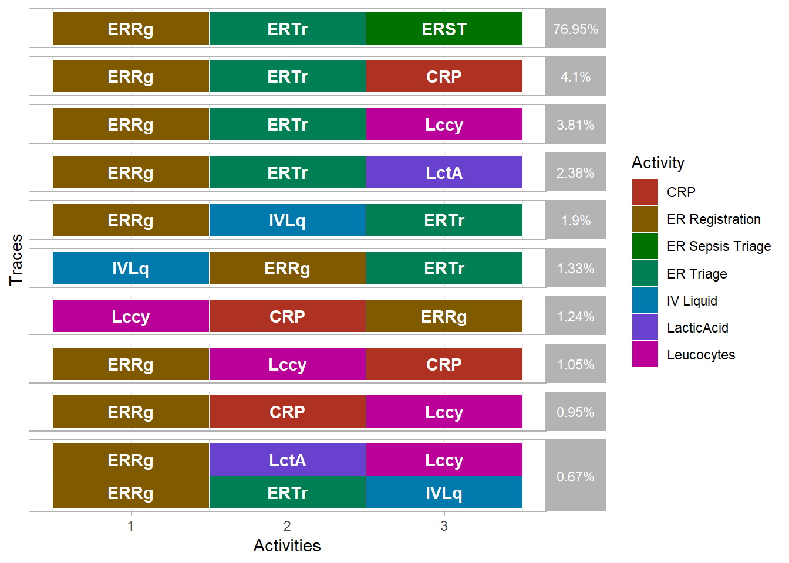

Next to the specifically supported preprocessing steps (aggregating, subsetting and enriching), event logs can also be manipulated in a more generic way. In order to do so, well-known dplyr-verbs have been adapted to event log objects and other extensions have been made.
Using the group_by function, event logs can be grouped according to a (set of) variables, such that all further computations happen for each of these different groups.
In the next example, the number of cases are computed for each value of “vehicleclass”.
traffic_fines %>%
group_by(vehicleclass) %>%
n_cases()## # A tibble: 4 x 2
## vehicleclass n_cases
## <chr> <int>
## 1 A 8569
## 2 C 17
## 3 M 5
## 4 <NA> 8591For specific groupings, some auxiliary functions are available.
group_by_case - group by casesgroup_by_activity - group by activity typesgroup_by_resource - group by resourcesgroup_by_activity_resource - group by activity resource pairgroup_by_activity_instance - group by activity instances.For example, the number of cases in which a specific resource occurs, can be computed as follows.
sepsis %>%
group_by_resource %>%
n_cases## # A tibble: 26 x 2
## resource n_cases
## <fct> <int>
## 1 ? 294
## 2 A 985
## 3 B 1013
## 4 C 1050
## 5 D 46
## 6 E 782
## 7 F 200
## 8 G 147
## 9 H 50
## 10 I 118
## # ... with 16 more rowsNote that each of the descriptive metrics discussed here can be rewritten using these lower-level functions. The example above is equal to the resource_involvement metric at case level.
When a grouping is no longer needed, it can be removed using the ungroup_eventlog function.
You can use mutate to add new variable to an event log, possibly by using existing variables. In the next example, the total amount of lacticacid is computed for each case.
sepsis %>%
group_by_case() %>%
mutate(total_lacticacid = sum(lacticacid, na.rm = T))## # Groups: [case_id]
## Grouped Event log consisting of:
## 15214 events
## 846 traces
## 1050 cases
## 16 activities
## 15214 activity instances
##
## # A tibble: 15,214 x 35
## case_id activity lifecycle resource timestamp age crp
## <chr> <fct> <fct> <fct> <dttm> <int> <dbl>
## 1 A ER Registra~ complete A 2014-10-22 11:15:41 85 NA
## 2 A Leucocytes complete B 2014-10-22 11:27:00 NA NA
## 3 A CRP complete B 2014-10-22 11:27:00 NA 210.
## 4 A LacticAcid complete B 2014-10-22 11:27:00 NA NA
## 5 A ER Triage complete C 2014-10-22 11:33:37 NA NA
## 6 A ER Sepsis T~ complete A 2014-10-22 11:34:00 NA NA
## 7 A IV Liquid complete A 2014-10-22 14:03:47 NA NA
## 8 A IV Antibiot~ complete A 2014-10-22 14:03:47 NA NA
## 9 A Admission NC complete D 2014-10-22 14:13:19 NA NA
## 10 A CRP complete B 2014-10-24 09:00:00 NA 1090.
## # ... with 15,204 more rows, and 28 more variables: diagnose <chr>,
## # diagnosticartastrup <chr>, diagnosticblood <chr>, diagnosticecg <chr>,
## # diagnosticic <chr>, diagnosticlacticacid <chr>,
## # diagnosticliquor <chr>, diagnosticother <chr>, diagnosticsputum <chr>,
## # diagnosticurinaryculture <chr>, diagnosticurinarysediment <chr>,
## # diagnosticxthorax <chr>, disfuncorg <chr>, hypotensie <chr>,
## # hypoxie <chr>, infectionsuspected <chr>, infusion <chr>,
## # lacticacid <dbl>, leucocytes <chr>, oligurie <chr>,
## # sirscritheartrate <chr>, sirscritleucos <chr>,
## # sirscrittachypnea <chr>, sirscrittemperature <chr>,
## # sirscriteria2ormore <chr>, activity_instance_id <chr>, .order <int>,
## # total_lacticacid <dbl>Generic filtering of events can be done using the filter function, which takes an event log and any number of logical conditions. The example below filters events which have vehicleclas “C” and amount greater than 300. More process-specific filtering methods can be found here.
traffic_fines %>%
filter(vehicleclass == "C", amount > 300)## Event log consisting of:
## 17 events
## 1 traces
## 17 cases
## 1 activities
## 17 activity instances
##
## # A tibble: 17 x 18
## case_id activity lifecycle resource timestamp amount article
## <chr> <fct> <fct> <fct> <dttm> <dbl> <int>
## 1 A10060 Create F~ complete 541 2007-03-08 00:00:00 360. 157
## 2 A10497 Create F~ complete 558 2007-03-30 00:00:00 360. 157
## 3 A10818 Create F~ complete 561 2007-04-08 00:00:00 360. 157
## 4 A11707 Create F~ complete 550 2007-04-24 00:00:00 360. 157
## 5 A1408 Create F~ complete 559 2006-08-20 00:00:00 350. 157
## 6 A14883 Create F~ complete 561 2007-06-29 00:00:00 360. 157
## 7 A17130 Create F~ complete 541 2007-07-15 00:00:00 360. 157
## 8 A1815 Create F~ complete 563 2006-08-10 00:00:00 350. 157
## 9 A19109 Create F~ complete 556 2007-07-17 00:00:00 360. 157
## 10 A23000 Create F~ complete 550 2007-12-29 00:00:00 360. 157
## 11 A24247 Create F~ complete 561 2007-12-03 00:00:00 360. 157
## 12 A24366 Create F~ complete 541 2008-02-09 00:00:00 360. 157
## 13 A24634 Create F~ complete 537 2007-11-21 00:00:00 360. 157
## 14 A24942 Create F~ complete 561 2007-12-30 00:00:00 360. 157
## 15 A25581 Create F~ complete 559 2007-11-23 00:00:00 360. 157
## 16 A26099 Create F~ complete 559 2007-12-09 00:00:00 360. 157
## 17 A26277 Create F~ complete 538 2008-01-07 00:00:00 360. 157
## # ... with 11 more variables: dismissal <chr>, expense <dbl>,
## # lastsent <chr>, matricola <chr>, notificationtype <chr>,
## # paymentamount <dbl>, points <int>, totalpaymentamount <chr>,
## # vehicleclass <chr>, activity_instance_id <chr>, .order <int>Variables on a event log can be selected using select. By default, select will always make sure that the mapping-variables are retained. Otherwise, it would no longer function as an eventlog.
traffic_fines %>%
select(vehicleclass)## Event log consisting of:
## 27001 events
## 3 traces
## 8591 cases
## 6 activities
## 27001 activity instances
##
## # A tibble: 27,001 x 8
## vehicleclass case_id activity activity_instan~ timestamp
## <chr> <chr> <fct> <chr> <dttm>
## 1 A A1 Create Fine 1 2006-07-24 00:00:00
## 2 <NA> A1 Send Fine 2 2006-12-05 00:00:00
## 3 A A100 Create Fine 3 2006-08-02 00:00:00
## 4 <NA> A100 Send Fine 4 2006-12-12 00:00:00
## 5 <NA> A100 Insert Fine ~ 5 2007-01-15 00:00:00
## 6 <NA> A100 Add penalty 6 2007-03-16 00:00:00
## 7 <NA> A100 Send for Cre~ 7 2009-03-30 00:00:00
## 8 A A10004 Create Fine 19 2007-03-20 00:00:00
## 9 <NA> A10004 Send Fine 20 2007-07-17 00:00:00
## 10 <NA> A10004 Insert Fine ~ 21 2007-07-24 00:00:00
## # ... with 26,991 more rows, and 3 more variables: resource <fct>,
## # lifecycle <fct>, .order <int>By setting the argument force_df = TRUE, the mapping-variables will not be retained, and the output will be a data.frame, and not an event log.
traffic_fines %>%
select(case_id, vehicleclass, amount, force_df = TRUE)## # A tibble: 27,001 x 3
## case_id vehicleclass amount
## <chr> <chr> <dbl>
## 1 A1 A 350.
## 2 A1 <NA> 350.
## 3 A100 A 350.
## 4 A100 <NA> 350.
## 5 A100 <NA> 350.
## 6 A100 <NA> 715.
## 7 A100 <NA> 715.
## 8 A10004 A 360.
## 9 A10004 <NA> 360.
## 10 A10004 <NA> 360.
## # ... with 26,991 more rowsEvent data can be sorted using the arrange function. desc can be used to sort descendingly on an attribute.
#sort descending on time
patients %>%
arrange(desc(time))## Event log consisting of:
## 5442 events
## 7 traces
## 500 cases
## 7 activities
## 2721 activity instances
##
## # A tibble: 5,442 x 7
## handling patient employee handling_id registration_type
## <fct> <chr> <fct> <chr> <fct>
## 1 Triage and Assessment 500 r2 1000 complete
## 2 Discuss Results 495 r6 2229 complete
## 3 X-Ray 498 r5 1734 complete
## 4 Triage and Assessment 500 r2 1000 start
## 5 Triage and Assessment 499 r2 999 complete
## 6 Discuss Results 495 r6 2229 start
## 7 Discuss Results 489 r6 2223 complete
## 8 X-Ray 498 r5 1734 start
## 9 X-Ray 497 r5 1733 complete
## 10 Discuss Results 489 r6 2223 start
## # ... with 5,432 more rows, and 2 more variables: time <dttm>,
## # .order <int>An eventlog can be sliced, which mean returning a slice, i.e. a subset, from the eventlog, based on row number. There are three ways to slice event logs
slice: take a slice of casesslice_activities: take a slice of activity instancesslice_events: take a slice of eventsThe next piece of code returns the first 10 cases. Note that first here is defined by the current order of the data set, not by time.
patients %>%
slice(1:10)## Event log consisting of:
## 110 events
## 2 traces
## 10 cases
## 7 activities
## 55 activity instances
##
## # A tibble: 110 x 7
## handling patient employee handling_id registration_type
## <fct> <chr> <fct> <chr> <fct>
## 1 Registration 1 r1 1 start
## 2 Registration 2 r1 2 start
## 3 Registration 3 r1 3 start
## 4 Registration 4 r1 4 start
## 5 Registration 5 r1 5 start
## 6 Registration 6 r1 6 start
## 7 Registration 7 r1 7 start
## 8 Registration 8 r1 8 start
## 9 Registration 9 r1 9 start
## 10 Registration 10 r1 10 start
## # ... with 100 more rows, and 2 more variables: time <dttm>, .order <int>The next piece of code returns the first 10 activity instances.
patients %>%
slice_activities(1:10)## Event log consisting of:
## 20 events
## 1 traces
## 10 cases
## 1 activities
## 10 activity instances
##
## # A tibble: 20 x 7
## handling patient employee handling_id registration_type
## <fct> <chr> <fct> <chr> <fct>
## 1 Registration 1 r1 1 start
## 2 Registration 2 r1 2 start
## 3 Registration 3 r1 3 start
## 4 Registration 4 r1 4 start
## 5 Registration 5 r1 5 start
## 6 Registration 6 r1 6 start
## 7 Registration 7 r1 7 start
## 8 Registration 8 r1 8 start
## 9 Registration 9 r1 9 start
## 10 Registration 10 r1 10 start
## 11 Registration 1 r1 1 complete
## 12 Registration 2 r1 2 complete
## 13 Registration 3 r1 3 complete
## 14 Registration 4 r1 4 complete
## 15 Registration 5 r1 5 complete
## 16 Registration 6 r1 6 complete
## 17 Registration 7 r1 7 complete
## 18 Registration 8 r1 8 complete
## 19 Registration 9 r1 9 complete
## 20 Registration 10 r1 10 complete
## # ... with 2 more variables: time <dttm>, .order <int>The next piece of code returns the first 10 events.
patients %>%
slice_events(1:10)## Event log consisting of:
## 10 events
## 1 traces
## 10 cases
## 1 activities
## 10 activity instances
##
## # A tibble: 10 x 7
## handling patient employee handling_id registration_type
## <fct> <chr> <fct> <chr> <fct>
## 1 Registration 1 r1 1 start
## 2 Registration 2 r1 2 start
## 3 Registration 3 r1 3 start
## 4 Registration 4 r1 4 start
## 5 Registration 5 r1 5 start
## 6 Registration 6 r1 6 start
## 7 Registration 7 r1 7 start
## 8 Registration 8 r1 8 start
## 9 Registration 9 r1 9 start
## 10 Registration 10 r1 10 start
## # ... with 2 more variables: time <dttm>, .order <int>The slice function select events, cases or activity instances based on their current position in the event data. As such, the result can be changed using the arrange function. More often, we want to select the first n activity instances, or the last ones. This is achieved with the first_n or last_n functions, which return the first, resp. last, n activity instances of a log based on time, not on position.
patients %>%
first_n(n = 5)## Event log consisting of:
## 10 events
## 2 traces
## 3 cases
## 2 activities
## 5 activity instances
##
## # A tibble: 10 x 7
## handling patient employee handling_id registration_type
## <fct> <chr> <fct> <chr> <fct>
## 1 Registration 1 r1 1 start
## 2 Registration 2 r1 2 start
## 3 Triage and Assessment 1 r2 501 start
## 4 Registration 1 r1 1 complete
## 5 Registration 2 r1 2 complete
## 6 Triage and Assessment 2 r2 502 start
## 7 Triage and Assessment 1 r2 501 complete
## 8 Triage and Assessment 2 r2 502 complete
## 9 Registration 4 r1 4 start
## 10 Registration 4 r1 4 complete
## # ... with 2 more variables: time <dttm>, .order <int>This is not impacted by a different ordering of the data since it will take the time aspect into account.
patients %>%
arrange(desc(time)) %>%
first_n(n = 5)## Event log consisting of:
## 10 events
## 2 traces
## 3 cases
## 2 activities
## 5 activity instances
##
## # A tibble: 10 x 7
## handling patient employee handling_id registration_type
## <fct> <chr> <fct> <chr> <fct>
## 1 Registration 1 r1 1 start
## 2 Registration 2 r1 2 start
## 3 Triage and Assessment 1 r2 501 start
## 4 Registration 1 r1 1 complete
## 5 Registration 2 r1 2 complete
## 6 Triage and Assessment 2 r2 502 start
## 7 Triage and Assessment 1 r2 501 complete
## 8 Triage and Assessment 2 r2 502 complete
## 9 Registration 4 r1 4 start
## 10 Registration 4 r1 4 complete
## # ... with 2 more variables: time <dttm>, .order <int>Incombination with group_by_case, it is very easy to select the heads or tails of each case. Below, we explore the 95% most common first 3 activities in the sepsis log.
sepsis %>%
group_by_case() %>%
first_n(3) %>%
trace_explorer(cov = 0.95)
The sample_n function allows to take a sample of the event log containing n cases. The code below returns a sample of 10 patients.
patients %>%
sample_n(size = 10)## Event log consisting of:
## 110 events
## 2 traces
## 10 cases
## 7 activities
## 55 activity instances
##
## # A tibble: 110 x 7
## handling patient employee handling_id registration_type
## <fct> <chr> <fct> <chr> <fct>
## 1 Registration 9 r1 9 start
## 2 Registration 130 r1 130 start
## 3 Registration 213 r1 213 start
## 4 Registration 231 r1 231 start
## 5 Registration 273 r1 273 start
## 6 Registration 312 r1 312 start
## 7 Registration 386 r1 386 start
## 8 Registration 408 r1 408 start
## 9 Registration 423 r1 423 start
## 10 Registration 463 r1 463 start
## # ... with 100 more rows, and 2 more variables: time <dttm>, .order <int>Note that this function can also be used with a sample size bigger than the number of cases in the event log, if you allow for the replacements of drawn cases.
A more extensive list of subsetting methods is provided by edeaR. Look here for more information.